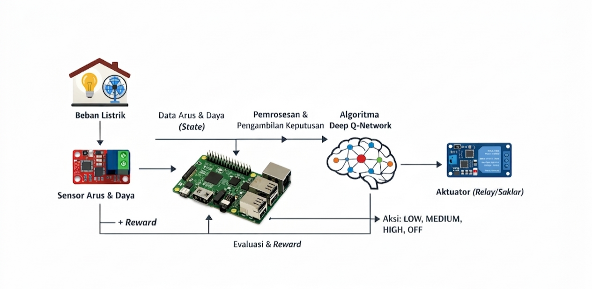
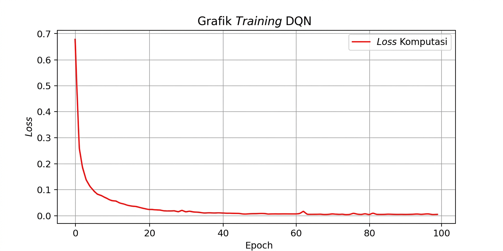
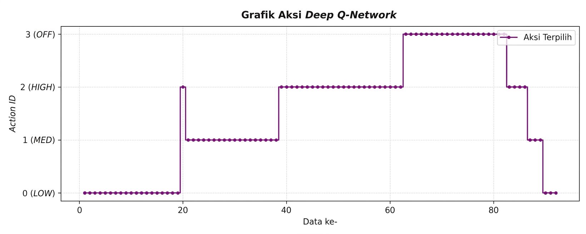
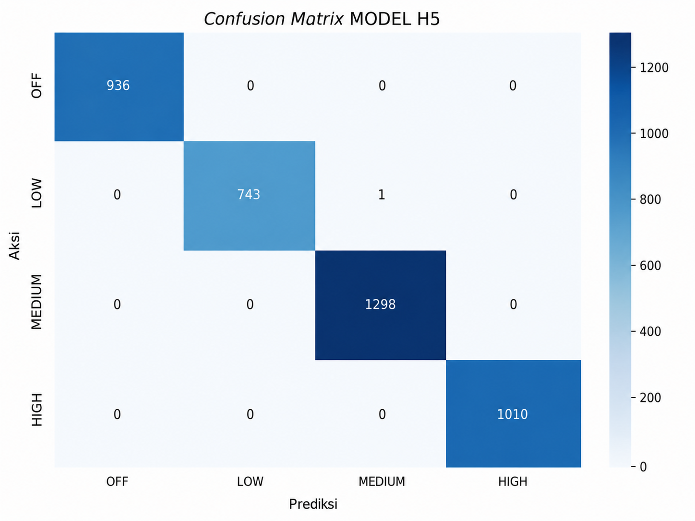
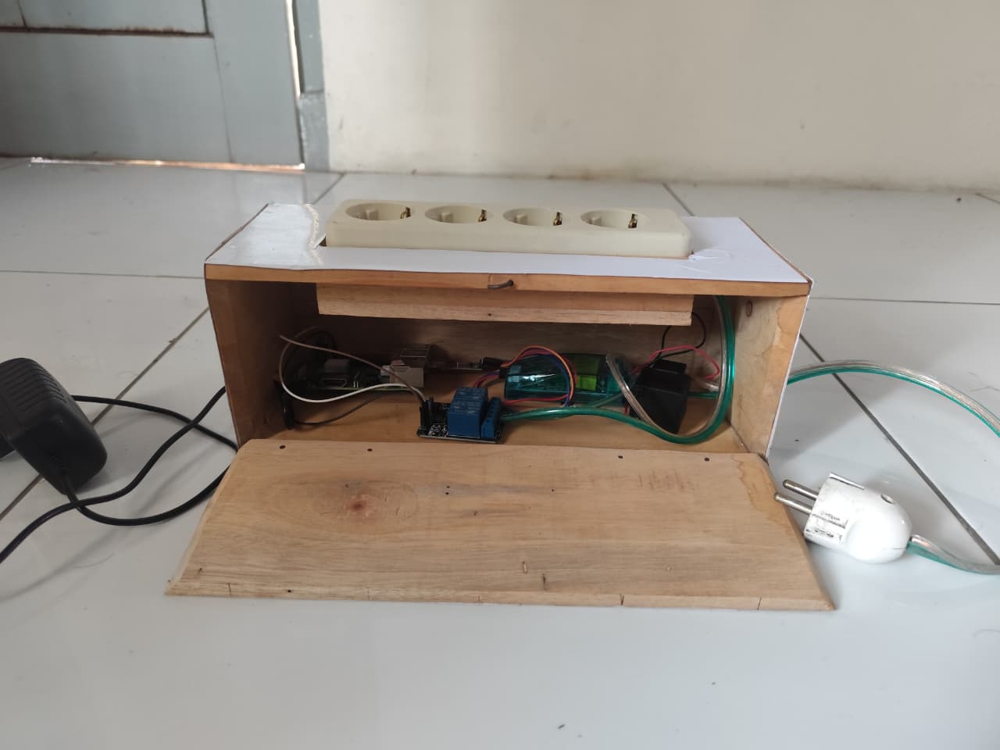
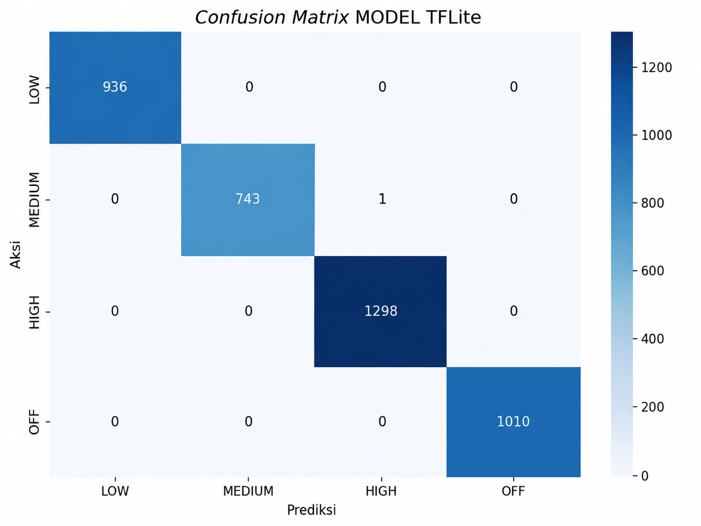
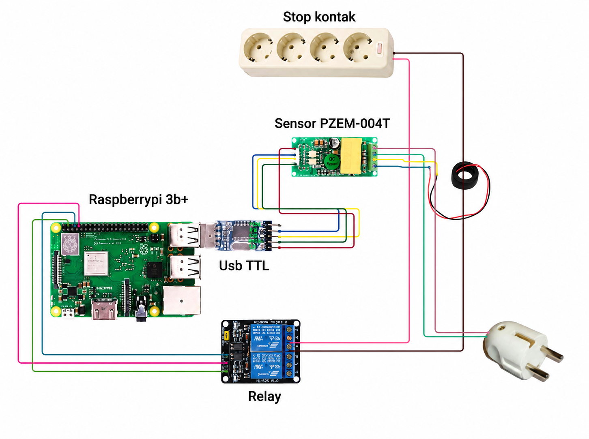

Intelligent Control System
Using Deep Q-Network
Sistem kontrol cerdas yang menggunakan Deep Q-Network (DQN) untuk mempelajari kondisi sistem dan menentukan tindakan kontrol secara adaptif.

Project Overview
Project ini merupakan penelitian mengenai penerapan Deep Q-Network (DQN) untuk pengelolaan energi. Deep Q-Network adalah salah satu pendekatan dalam Reinforcement Learning yang menggabungkan Q-Learning dengan neural network untuk mempelajari kebijakan pengambilan keputusan secara adaptif.
Model dikembangkan menggunakan Python dengan framework TensorFlow, dan diimplementasikan pada Raspberry Pi sebagai perangkat sistem. Melalui proses training berbasis pengalaman, model belajar memberikan keputusan yang sesuai berdasarkan kondisi sistem yang diamati.
The Problem
Pengelolaan Energi
- Penggunaan energi perlu dikelola secara efisien untuk menghindari pemborosan dan memastikan ketersediaan yang optimal.
- Kondisi sistem yang terus berubah membutuhkan pendekatan yang mampu beradaptasi secara dinamis.
- Keputusan penggunaan energi yang tidak tepat dapat berdampak pada efisiensi dan performa sistem secara keseluruhan.
Keterbatasan Pendekatan Berbasis Aturan
- Pendekatan berbasis aturan statis memiliki keterbatasan ketika kondisi lingkungan atau sistem berubah di luar skenario yang telah ditetapkan.
- Aturan yang ditetapkan secara manual sulit untuk mencakup semua kemungkinan kondisi yang dapat terjadi.
- Dibutuhkan pendekatan yang dapat belajar secara mandiri dari pengalaman dan menyesuaikan diri dengan kondisi yang bervariasi.
Our Approach
Penelitian ini menggunakan Deep Q-Network (DQN) sebagai pendekatan Reinforcement Learning. DQN memungkinkan agent untuk belajar mengambil keputusan terbaik berdasarkan kondisi yang diamati, tanpa perlu mendefinisikan aturan secara eksplisit.
Siklus interaksi DQN Agent dengan environment
📥 State
Representasi kondisi sistem atau lingkungan pada suatu waktu tertentu. State menjadi input bagi DQN untuk menentukan keputusan yang tepat.
🎯 Action
Keputusan yang dapat diambil oleh agent berdasarkan state yang diamati. Action dipilih berdasarkan nilai Q tertinggi yang diprediksi oleh network.
🏆 Reward
Sinyal feedback yang digunakan untuk mengevaluasi kualitas keputusan yang diambil. Agent belajar untuk memaksimalkan total reward yang diperoleh.
🧠 Q-Network
Neural network yang digunakan untuk memperkirakan nilai Q dari setiap pasangan state–action, sebagai dasar pemilihan keputusan oleh agent.
🔄 Experience Replay
Teknik penyimpanan pengalaman yang memungkinkan agent belajar dari interaksi sebelumnya secara berulang untuk meningkatkan stabilitas training.
📋 Policy
Strategi yang dipelajari agent dalam memilih action berdasarkan state. Policy berkembang seiring proses training berlangsung.
System Architecture
Sistem dirancang dengan alur dari pembacaan kondisi lingkungan energi, pemrosesan oleh model DQN, hingga keluaran keputusan yang dieksekusi melalui Raspberry Pi.
Sumber data kondisi sistem energi yang menjadi input bagi model DQN.
Data kondisi yang diproses dan disiapkan sebagai representasi state untuk model.
Neural network yang memproses state dan menghasilkan nilai Q untuk setiap possible action.
Perangkat yang digunakan untuk mengeksekusi model dan menjalankan inferensi pada sistem nyata.
Keluaran berupa keputusan pengelolaan energi yang dieksekusi berdasarkan action dari model.
Implementation
Sistem dibangun menggunakan komponen-komponen berikut yang bekerja secara terintegrasi dalam pipeline pengembangan hingga deployment.
Python
Digunakan sebagai bahasa pemrograman utama untuk pengembangan model, proses training, evaluasi, dan pipeline data. Python juga digunakan untuk menjalankan inferensi pada Raspberry Pi.
Raspberry Pi
Digunakan sebagai perangkat implementasi sistem. Raspberry Pi menjalankan model yang telah dikonversi ke format ringan untuk mendukung inferensi pada perangkat dengan resource terbatas.
Deep Q-Network
Model neural network yang digunakan untuk mempelajari nilai Q dari setiap state–action pair. Model dilatih menggunakan data dari simulasi environment dan digunakan untuk menghasilkan keputusan pengelolaan energi.
Data Processing
Tahap pemrosesan data yang menyiapkan input state untuk model, termasuk normalisasi dan transformasi data kondisi sistem sehingga dapat diproses secara efisien oleh DQN.
Model Training
Proses training DQN melibatkan siklus interaksi berulang antara agent dan environment untuk memperbarui parameter neural network secara bertahap.
Kondisi sistem energi saat ini direpresentasikan sebagai state yang menjadi input bagi agent.
Agent memilih action berdasarkan nilai Q yang diprediksi oleh network, dengan eksplorasi untuk menemukan strategi baru.
Setelah action dieksekusi, environment memberikan reward sebagai feedback kualitas keputusan.
Setiap interaksi (state, action, reward, next state) disimpan dalam replay buffer untuk training.
Network diperbarui menggunakan mini-batch dari replay buffer untuk menstabilkan proses pembelajaran.
Proses berulang sampai model memperoleh policy yang lebih baik dalam mengelola energi.

Model Deployment
Setelah proses training selesai, model dikonversi ke format yang lebih ringan menggunakan TensorFlow Lite agar dapat dijalankan secara efisien pada perangkat dengan resource terbatas seperti Raspberry Pi.
Model hasil training disimpan dalam format standar TensorFlow sebelum dilakukan konversi untuk deployment.
Model dikonversi dari format training ke format TensorFlow Lite yang lebih ringan dan dioptimalkan untuk inference pada perangkat edge.
Format model yang dioptimalkan untuk perangkat dengan resource terbatas, memungkinkan inferensi yang lebih efisien dibandingkan model penuh.
Model TFLite dijalankan pada Raspberry Pi untuk menghasilkan keputusan pengelolaan energi secara real-time berdasarkan kondisi sistem yang diamati.
Testing & Evaluation
Pengujian dilakukan untuk memvalidasi performa model pada berbagai skenario serta mengevaluasi kualitas deployment pada Raspberry Pi.
Scenario Testing
Pengujian dilakukan pada berbagai skenario kondisi sistem untuk memvalidasi konsistensi keputusan yang dihasilkan model.
Testing results will be added.
Model Evaluation
Evaluasi performa model berdasarkan metrik yang relevan dengan tujuan optimasi pengelolaan energi.
Testing results will be added.
Deployment Evaluation
Evaluasi performa model sebelum dan sesudah konversi ke TensorFlow Lite dari sisi deployment dan inference pada Raspberry Pi.
Testing results will be added.

Results
Detailed experimental results will be presented here.
Training graph · Testing result · Model comparison · Deployment comparison

What I Learned
Memahami konsep Reinforcement Learning dan bagaimana agent belajar dari interaksi dengan environment.
Memahami penerapan Deep Q-Network sebagai pendekatan pengambilan keputusan berbasis neural network.
Memahami proses training dan evaluasi model machine learning secara end-to-end.
Memahami integrasi model machine learning dengan Raspberry Pi sebagai perangkat implementasi.
Memahami proses deployment model menggunakan TensorFlow Lite untuk perangkat dengan resource terbatas.
Memahami pentingnya pengujian dan evaluasi model secara menyeluruh sebelum dan sesudah deployment.
Technologies
Project Gallery


